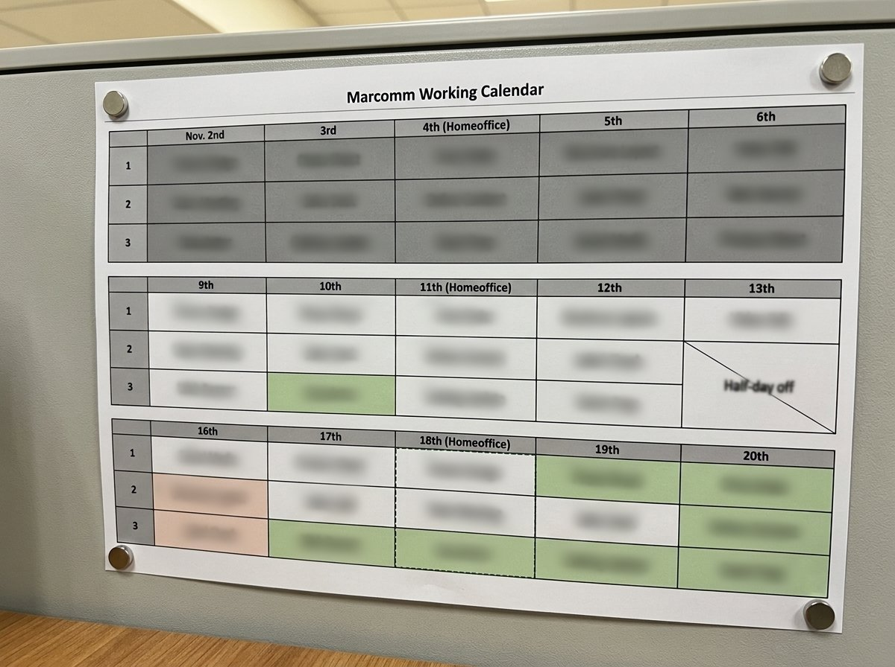

미루면 무능해 보일까 봐
내 자리 옆 파티션에는 A4 한 장짜리 업무 달력이 붙어 있다. 엑셀로 짠 계획을 출력한 것이다. 자석으로 붙여 둔 건 자주 갈아 끼우기 때문이다. 계획은 생각보다 자주 바뀐다.

이 달력을 붙이기 전까지, 나는 들어오는 일을 전부 가장 빨리 끝내려 했다. 지금은 하루에 세 가지만 중요하게 처리하고, 나머지는 미룬다. 그리고 미룬다는 사실을 숨기지 않는다.
한국뷔르트에서 마케팅 커뮤니케이션 담당자로 일한 지 3년이 다 되어 간다. 그동안 가장 크게 바꾼 건 일을 받는 방식이다.
모든 일을 가장 빨리
회사는 크는 중이었다. 전에는 외부 에이전시를 거쳐 만들던 시각물을, 이제는 내가 직접 만들었다. 디자인 도구를 직접 다루는 전공자는 내가 처음이었고, 요청은 부서를 가리지 않고 밀려들었다.
2025년 한 해 동안 처리한 요청은 180건이 넘었다. 시각물 제작은 모두 여기에 들어간다. 휴가와 외근, 사내 행사를 빼면 거의 매일 한 건씩 끝낸 셈이다. 배너 한 장으로 끝나는 일이 있었고, 한 호에 사흘이 걸리는 월간 브로슈어가 있었다.
나는 그 모두를 가장 빨리 끝내려 했다. 그때는 그게 책임감인 줄 알았다.
조언마저 미뤘다
2025년 11월, 본사에서 파견 온 독일인 디렉터가 잠깐 이야기를 나누자고 했다. 하루에 세 가지만 중요하게 처리하는 원칙을 세워 보라는 권유였다. 긴급도와 중요도를 따지되, 진짜 목적은 미룰 수 있는 일을 가려내는 데 있었다.
강제성 없는 조언이었고, 익숙하지 않은 방식이었다. 나는 그 조언마저 바로 따르지 못했다. 급한 일부터 처리하느라 미뤘고, 세 가지만 고르는 연습은 해를 넘겨 2026년 1월에야 시작했다.
왜 머뭇거렸나 돌아보면, 미루겠다고 말하는 순간 능력이 모자라 보일 것 같았다. 지금 적고 보니 그 걱정이 전부였다.
여섯 시간은 계획에, 두 시간은 비워 둔다
하루를 두 시간 남짓한 칸 세 개로 나누고, 칸마다 그날 중요한 일을 하나씩 넣는다. 끝내지 못한 일은 다음 날로 넘긴다.
무엇을 넣고 무엇을 미룰지는 기준이 있어야 했다. 그래서 타협할 수 없는 선부터 그었다. 인쇄 일정이 걸린 일과 고객사와의 약속은 무슨 일이 있어도 미루지 않는다. 사내에서만 쓰는 자료는 미룰 수 있다.
그리고 두 시간은 무조건 비워 둔다. 일은 예측할 수 없다. 긴급한 일이 끼어들어 계획이 틀어지는 건 늘 있는 일이다. 꼭 오늘 처리해야 하는 일이 생기면 그 시간에 대응하고, 없으면 하던 일의 완성도를 더 높인다.
그래도 모든 일을 일정표대로 처리하지는 못한다. 아직 안 되고 있고, 앞으로도 그럴 것이다. 야근이 사라진 것도 아니다. 한 달에 세 번쯤은 아내에게 양해를 구하고 남아서 밀린 일을 정리한다. 예전을 생각하면 이 정도는 감사한 편이다.
나는 매일 출근 시간보다 20분 넘게 일찍 사무실에 도착한다. 부지런해서가 아니라 아침 길이 막히기 때문이다. 그렇게 생긴 여유에 머릿속을 정리하며 오늘의 주요 과업을 추리고, 일정표를 다시 점검한다.
요청하는 말이 달라졌다
달력은 출력해서 자리 옆에 붙인다. 업무를 조율하러 오는 사람은 누구나 볼 수 있다. 일정을 맞추러 왔다가 나보다 달력에 먼저 눈이 가는 사람도 있다.
달력은 요청하는 사람이 보기 좋게 만들었다. 최근 업무를 자주 맡기는 부서마다 색을 정해 두어서, 자기 부서의 색만 찾으면 언제 일이 들어가는지 바로 확인할 수 있다.
재택하는 날에도 달력은 자리에 남는다. 전날 최신본으로 바꿔 두면, 내가 없어도 내 달력을 보며 일정을 논의할 수 있다. 공유 문서도 방법이지만, 작은 회사에서는 자리로 직접 찾아오는 사람이 많아 종이 한 장이 더 빠를 때가 있다.
언제부턴가 요청하는 말이 달라졌다. 전에는 '해 주세요'라고만 하던 부서들이 먼저 긴급도를 말하기 시작했다.
"이건 급하지 않아요."
"○○일까지 처리할 건이에요."
미루면 무능해 보일 거라던 걱정은, 적어도 우리 사무실에서는 맞지 않았다.
앞으로
지금도 하루에 세 가지만 한다. 고른 것은 벽에 붙여 둔다. 1인 담당자에게 일이 줄어드는 날은 오지 않지만, 고르는 법을 정해 두니 점심시간에 산책을 하고 책을 읽을 여유는 생겼다.